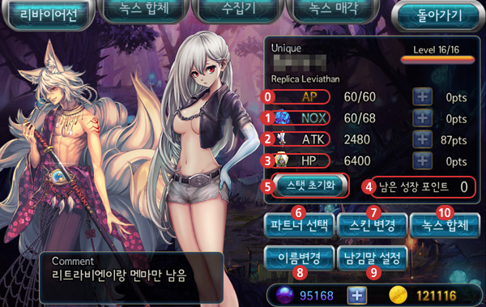
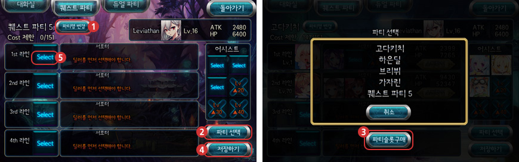
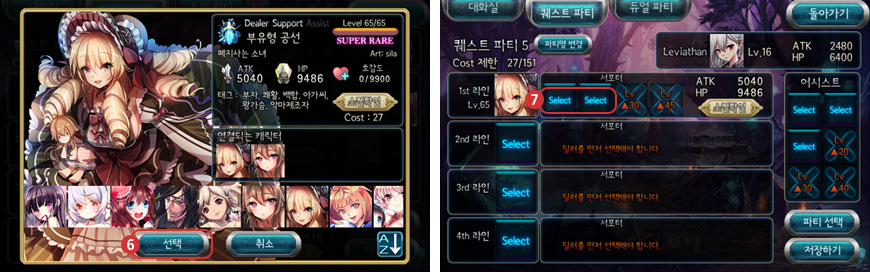
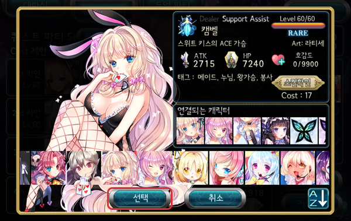
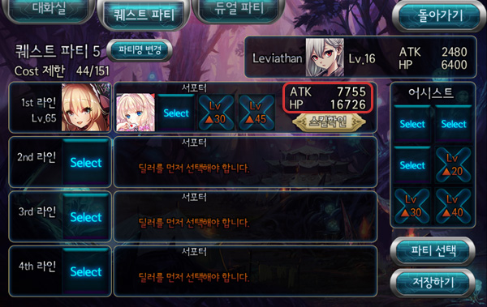
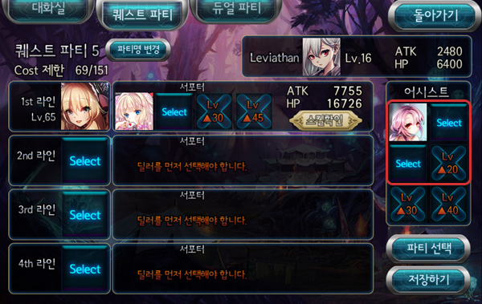

■ Leviathan

Feeding, Status Points, and etc for Leviathan is displayed here. Party construction is here too.
- AP 
Short for Action Point. 1 Point in AP increases Max AP by 2.
- NOX 
1 Point in Nox increases the number of Nox you can hold by 2.
- ATK 
Refers to Attack. 1 Point in ATK increases ATK by 0.5% to Leviathan and all Nox.
- HP 
Refers to Health Point. 1 Point in HP increases HP by 0.5% to Leviathan and all Nox.
- Growth Points 
When Leviathan increases in level, and when completing some Main Quests, Players can invest in AP, Nox, ATK, HP.
By default, maxCost of Party increases by 1 when using a Status Point.
- Reset Stats 
When using Status Points incorrectly, Players may reset their Status points by Reset button[스탯 초기화],
using Spheres(Cash currency).
- Choose Partner 
Selecting a Partner will have them show on the Main Game screen.
- Change Skin 
Players can change skins of the Leviathan using Spheres. Which Players must purchase.
- Change Name 
Players can change their IGN(In Game Name). Players can only change once every 30 days.
- Comment 
Players may change their comment that appears in Alliance. Players can change this at any time. (Comment at bottom left of the screenshot)
- Nox Synthesis
The process of feeding the Leviathan to raise its Level when Players touch [녹스 합체].
■ Party Config

Party configuration is stored here, this is for battling in Quests and Raids.
- Change Party Name
Players can change the name of the Party.
- Choose Party
Where Players can switch their active Party.
- Slot Purchase
By default, all Players start with 2 Party slots. Players must purchase slots using Spheres(Cash currency)
- Save
Saves Party configuration set.
Let's follow as we set a Party!
- Press the Select Box to display a list of Nox that are available to be in that slot. The first box is the Dealer, the starter of the line.
- When Players select a Nox, the ATK, HP, Cost, and Skill is displayed in detail.

- Press Choose[선택] to add the selected Nox into the Party. Next is to set the Support of the line.

- Press the Select box to add more Nox to the line. Select a Nox and press Choose[선택] to add them in the line,

- Shows changes to the line's stats. It adds up all the stats of the Noxes in the line.

- And also the Assist slot on the right hand side, it can be set the same way as Dealers and Supports.
- The Nox's stats are not added to the line but their skills may be used in battle.
- At the top left of the screen displays the Cost/Max Cost. Players must set their Party to be within Max Cost to save.